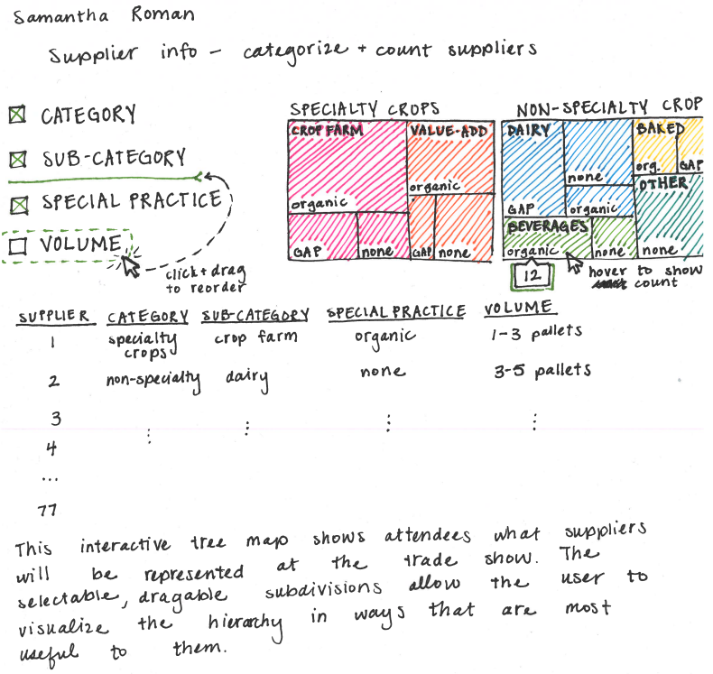
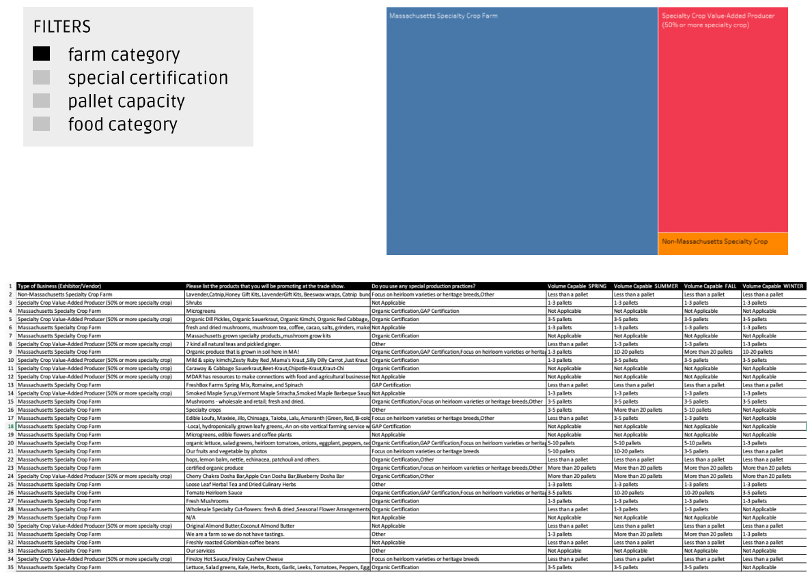

Anika Rabenhorst, Samantha Roman, Suraj Korumilli, Gisselle Rodriguez Benitez
Service-Learning Course Project as part of DS 4200: Information Presentation and Visualization, taught by Prof. Dylan Cashman, Data Visualization @ Khoury, Northeastern University.
As stated in our team charter, our goal is to develop visualizations for the Sustainable Business Network’s Food Festival attendees, vendors, and/or planners. One of SBN’s goals is to increase the numbers of buyers present at the event. During our interview with the SBN representative, we learned that their strategy is to market the experience, opening up the festival to more food producers and consumers. In doing so, the organization noted the concerns and barriers that buyers face, including size/capacity and certifications. Keeping this in mind, the organization is striving to be inclusive of the size of both vendors and buyers. Aside from size and capacity, buyers are also looking for specific certifications or practices for the produce they are purchasing. As we’ll see in the data, this includes Organic Certification, GAP Certification, and focus on heirloom varieties or heritage breeds.
The main take away from the interview was that SBN needed a visualization that allows for vendors to understand if the Food Festival is what they are looking for. This leads us to a few guiding questions. How do we show potential buyers what vendors are present? How do we visualize information about vendors? Specifically, what can we do to represent the capacities and certifications of the vendors?
Our visualization aims to display trade show vendor attendees in a heirarchical format. For Sprint 1, we have a static version of our table (which shows all relevant vendor details) and a singluar implementation of the treemap (which groups and orders vendors by certain categories). Vendors listed in the table are represented in the grouped treemap cells; the area of each cell depicts how many vendors fall into a specificed category. This information is currently grouped by "Type of Business" followed by "Product Category."
For our final visualization, we aim to add more interactivity and linked views. The user could specify the number of nested subdivisions for the treemap (e.g., group vendors by Type of Business -> Product Category -> Max Volume). Mouseover events would be used to show total vendor counts and other information. Ultimately, the table and treemap views will be linked so that hovering/selecting a vendor in the table will highlight the appropriate treemap cell and vice versa.
Embedded MP4 demo video using the HTML5 <video> tag. For example, this screen recording Prof. Cody Dunne made of Mike Bostock's flexible transitions in D3 slide:
Final visualization screenshots (PNG images), design justifications, UI walk-through, and linked presentation slides.
There were three separate datasets provided to us from SBN. One CSV contained information about the buyers. Two CSVs contained data from the vendors, separated by whether the vendor had specialty items.
Our project focused on the specialty vendor data. This dataset contained 20 fields and 34 entries. The fields included categorical values like position of the person filling out the application, the type of business, certifications/special practices, and types of products and crops; ordinal values like the volume produced and the volume of capacity to sell to new accounts; and continuous quantitative values like percent of products sold to wholesale and goal percent of products sold to wholesale.
Once we decided on the principal visualization we were creating, a tree-map, we added additional fields to aggregate and/or summarize certain fields. Specifically, we categorized the crops and products into “plants”, “produce”, and “value-added products”, combinations of those categories, and “other”. Similarly, we limited the number of different values in the certifications field. We categorized items if they had multiple certifications, and otherwise kept other values including singular certifications, “other”, and “not applicable”. We needed to add these two fields to avoid excessively small areas in our tree-map resulting from the various combinations of products and of certifications. We also wanted to aggregate the data from the capacities that vendors were willing to take on from new buyers. Instead of having each season be a level within the hierarchy, we made an aggregate field that showed the max amount a vendor was capable of within a season.
Sustainable Business Network is looking for a visualization that will give suppliers and buyers an idea of whether they want to take part in the trade show. Summarizing and presenting the registration data will encourage trade show attendance by informing attendees about vendors. The primary consumer of the visualization would be those who are thinking about attending the trade show. SBN wants to attract more buyers by visualizing the vendor information.
Before we decided the specific visualization we were creating, we looked at the various potential tasks. The most important domain task was to categorize vendors by types of food they produce, the size of their farm, and the certifications they have. To do this, we have summarized the data as the analytical task, allow for the user to browse the data as the search task, and present this in our tree-map and linked table as the analyze task. The completion of this task would also aid in the goals of our second domain task: analyzing what types of vendors were unrepresented and what foods buyers were looking for. The goals of this task were to identify the categories and to provide the user capabilities to locate and derive information from what is missing. Because this information isn’t explicitly given to us, the process for addressing this domain task was based more on what isn’t shown in the visualization. A vendor can look at the visualization and realize that nobody else currently in the trade show hits the same niche. This can make a vendor more inclined to apply next year.
We had two other domain tasks that did not get represented by our visualization due to our focus on vendors. One task was to classify buyers by consumption (quantity and type). To do this we would need to summarize the data, provide browsing ability, and present this in our visualization. A third task was to visualize the location of vendors. This required comparing the values, providing browsing ability, and presenting this in our visualization.
Our design process was split into these major iterations - a tableau Exploration, hand drawn sketches of our visualization, and a digitally sketched visualization with a lot of detail, usability testing and editing our visualization, and then the final visualization.
Before we were fully accustomed to our data and the project, we were tasked with combing through our data in Tableau to gain a further understanding of our data. Here we created several types of visualizations to try to fulfill the tasks we created in our task analysis section. We mostly created simple visualizations such as bar charts which plotted businesses to the amount of food they can provide, or a table showing business types (such as non-profit, retail grocer, wholesale grocer, etc.).
The second iteration of sketches were hand drawn. During this iteration, more of an emphasis was placed on creating a visualization with proper design choices that we learned in class.

Figure 1. Hand drawn sketch of visualization.
The third iteration of our visualization was a digitally sketched version using a combination of figma, tableau, and excel with a detailed explanation of how we expect our visualization to work. During this section, we created the specific filters (such as food category, farm category, pallet capacity, etc.) that our visualization would have as well as how brushing and linking would change the view of our visualization step-by-step.

Figure 2. Digitally-created final design sketch.
Short summary of work completed and areas for improvement/future-work.
Expectation: Meaningfully wraps up project and has good future directions.
List here where any code, packages/libraries, text, images, designs, etc. that you leverage come from.